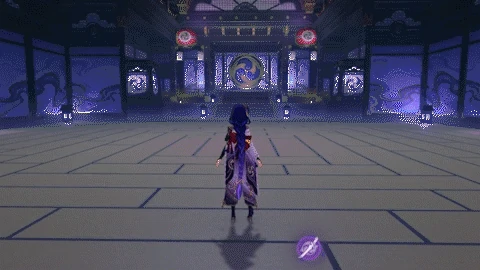
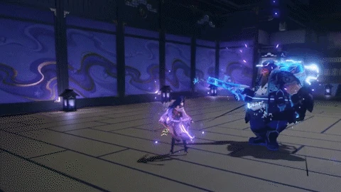
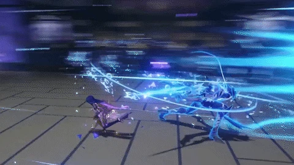
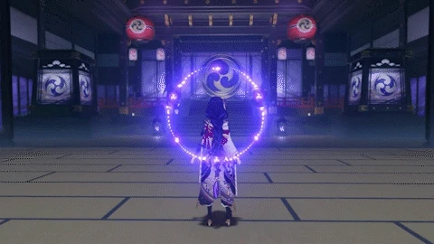
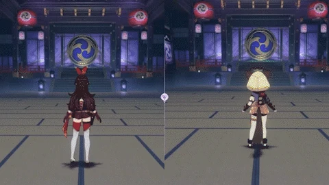

Gathering truths unnumbered and wishes uncounted, the Raiden Shogun unleashes the Musou no Hitotachi and deals
AoE Electro DMG
, using Musou Isshin in combat for a certain duration afterward. The DMG dealt by Musou no Hitotachi and Musou Isshin's attacks will be increased based on the number of Chakra Desiderata's Resolve stacks consumed when this skill is used.
Musou Isshin



While in this state, the Raiden Shogun will wield her tachi in battle, while her Normal, Charged, and Plunging Attacks will be infused with
Electro DMG
, which cannot be overridden. When such attacks hit opponents, she will regenerate Energy for all nearby party members. Energy can be restored this way once every 1s, and this effect can be triggered 5 times throughout this skill's duration.
While in this state, the Raiden Shogun's resistance to interruption is increased, and she is immune to
Electro-Charged
reaction DMG.
While Musou Isshin is active, the Raiden Shogun's Normal, Charged, and Plunging Attack DMG will be considered Elemental Burst DMG.
The effects of Musou Isshin will be cleared when the Raiden Shogun leaves the field.
Chakra Desiderata

When nearby party members (excluding the Raiden Shogun herself) use their Elemental Bursts, the Raiden Shogun will build up Resolve stacks based on the Energy Cost of these Elemental Bursts.
The maximum number of Resolve stacks is 60.

The Resolve gained by Chakra Desiderata will be cleared 300s after the Raiden Shogun leaves the field.